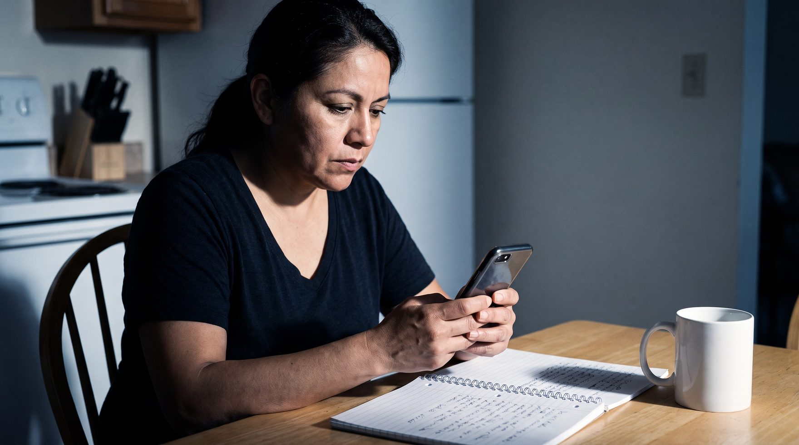

Actualizado al examen cívico de 2025
Cuatro herramientas en español para hacer su trámite de naturalización usted mismo.
Gratis para empezar, sin registro y sin instalar nada.

8.5 millones de residentes ya pueden solicitar la ciudadanía. Cada año lo hacen 820 mil.
La mayoría de las aplicaciones solo cubren el examen. Aquí está el trámite completo.
Unas preguntas y sabe si puede solicitar hoy, qué le falta, o si su caso necesita abogado.
Ver herramientaPaso 4 de 7: cita de datos biométricos. Lleve su tarjeta de residente.
Los siete pasos del trámite con seguimiento y recordatorios, del formulario al juramento.
Ver herramientaEl banco oficial de 128 preguntas, agrupado por tipo de memoria, con gráficos que anclan las respuestas.
Ver herramienta“Who was the first President of the United States?”
Lectura en voz alta, escritura al dictado y las preguntas sobre su propia solicitud.
Ver herramientaCon una condición: que su caso sea sencillo. La primera herramienta le dice si lo es.
Fuente: USCIS, Formulario N-400
La tarifa del formulario es obligatoria; el abogado, en un caso sencillo, no. En junio de 2026 el gobierno propuso subir la tarifa en papel a $1,330 y eliminar las exenciones; todavía no está vigente.
Desde saber si cumple los requisitos de residencia hasta el día de la entrevista: documentos y tarifas, los siete pasos del proceso, las 128 preguntas, la lectura y el dictado en inglés, y las excepciones por edad. Si en algún punto su caso necesita un abogado, se lo decimos.
USCIS las ordena por tema, que sirve para clasificar y no para aprender. Pase el cursor por un grupo para ver su gráfico de memoria.
33 respuestas traen un gráfico. Son las más difíciles de fijar: los mandatos de 2, 4 y 6 años, la suma del Congreso, las enmiendas que se confunden entre sí. La memoria visual retiene mejor que el texto solo.
Esta comunidad ha sido estafada muchas veces, así que lo decimos sin rodeos.
Le explicamos el proceso oficial en español, le ayudamos a saber si califica con las mismas preguntas del formulario, y le preparamos para el examen y la entrevista. Cuando un caso necesita abogado, lo decimos y le indicamos dónde buscar uno.
No somos abogados ni parte de USCIS. No llenamos su solicitud, no opinamos sobre su caso y no garantizamos resultados; nadie puede garantizarlos.
La información del proceso es gratuita y lo seguirá siendo. Lo que se paga es el seguimiento y la práctica.
Para empezar y ver si califica
$0
para siempre, sin tarjeta
Para hacer el trámite de principio a fin
$29 una vez
sin suscripción, sin renovación
Los trámites sencillos le quitan tiempo y dejan poco margen. Esta herramienta atiende esos casos, y cuando alguien responde que tuvo un arresto, una ausencia de más de seis meses o impuestos sin declarar, le decimos que necesita un abogado.
Por $40 al mes su despacho aparece ante esas personas en su zona, y sus propios clientes usan el estudio y la simulación de entrevista con el nombre de su despacho. Es una tarifa fija de publicidad, no una comisión por caso: repartir honorarios con quien no es abogado está prohibido. Nunca damos opinión legal; ante la duda, remitimos al abogado.
En la mayoría de los casos, sí. USCIS dice que no se necesita abogado para presentar el Formulario N-400. Pero «la mayoría» no es «todos»: si tiene algún arresto, salió del país por más de seis meses seguidos, debe impuestos o manutención, o duda de su residencia continua, sí necesita un abogado. La primera herramienta le dice en cuál de los dos grupos está.
Existe un banco oficial de 128 preguntas de educación cívica. En la entrevista el oficial le hace hasta 20 y usted debe contestar bien 12 para aprobar. Además hay una prueba de inglés: leer una oración en voz alta, escribir una al dictado y conversar sobre su solicitud. Esta versión rige para solicitudes presentadas desde el 20 de octubre de 2025.
No. Funciona desde el navegador de su teléfono y de su computadora, sin descargar nada. Puede empezar en el teléfono y seguir en la computadora. Tampoco consume muchos datos.
Por regla general el examen es en inglés, pero hay excepciones por edad y tiempo de residencia. Con 50 años o más y 20 como residente, o 55 o más y 15, puede presentar la parte cívica en español con intérprete. Con 65 o más y 20 años, además estudia una lista más corta. La primera herramienta le dice si le toca alguna.
Su avance se guarda en su propio dispositivo. No pedimos número de seguro social, número de extranjero ni datos de su caso. No vendemos información, no usamos rastreo publicitario y no tenemos relación con agencias del gobierno. No podemos afectar su caso ni para bien ni para mal.
No pedimos registro ni tarjeta para empezar. Si resulta que necesita un abogado, también se lo decimos.